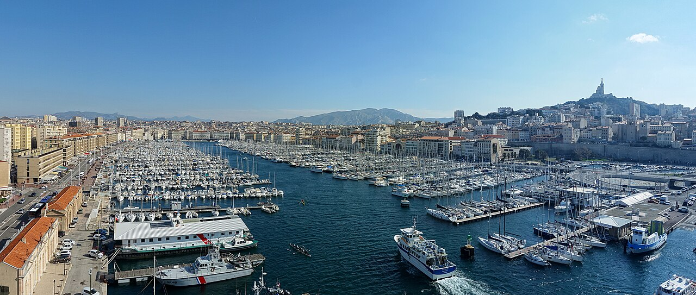
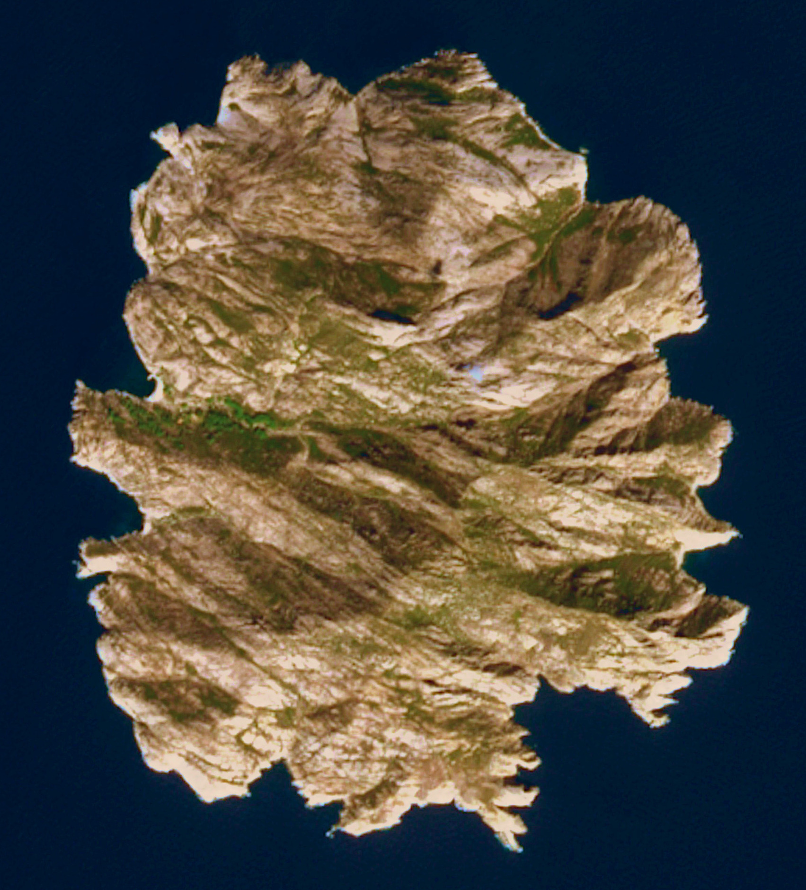
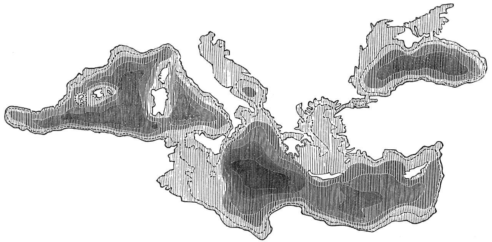
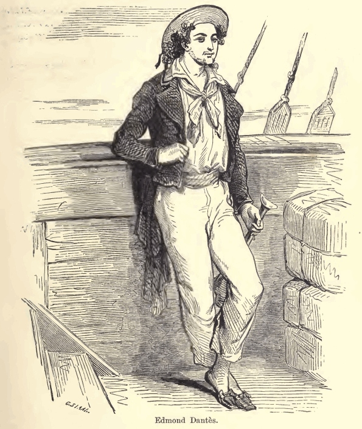
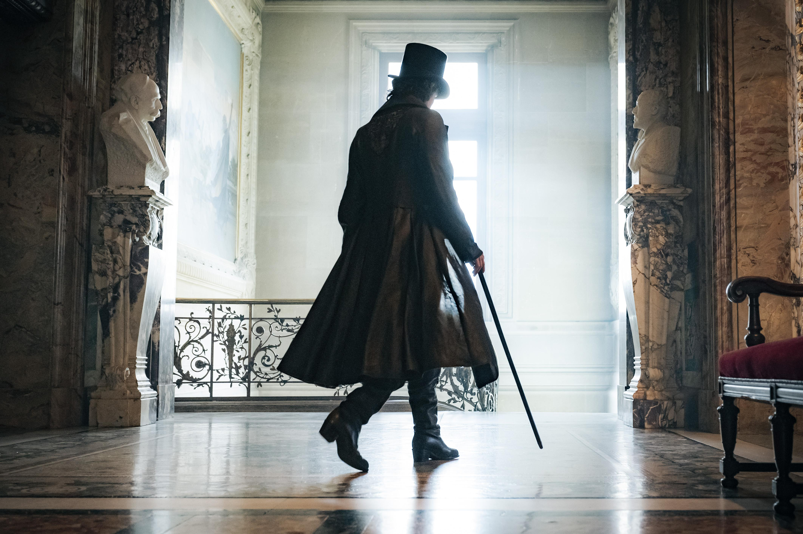

Arquivo 07 · Acervo visual
Galeria
Lugares, documentos e representações do universo de Monte Cristo.
9 espaços no acervo · 9 imagens disponíveis
Imagens do arquivo

Ver imagem: Marselha — fotografia contemporânea do Porto Velho Ver imagem: Château d’If
Ver imagem: Château d’If

Ver imagem: Montecristo — vista de satélite (2022) Ver imagem: Elba — panorama de Portoferraio (2009)
Ver imagem: Elba — panorama de Portoferraio (2009)
 Ver imagem: Paris — o Sena no Pont de la Grève (1830)
Ver imagem: Paris — o Sena no Pont de la Grève (1830)
 Ver imagem: Abdicação de Napoleão — 22 de junho de 1815
Ver imagem: Abdicação de Napoleão — 22 de junho de 1815

Ver imagem: Mapa do mar Mediterrâneo — Popular Science Monthly
Ver imagem: Edmond Dantès — ilustração do romance
Ver imagem: Conde de Monte Cristo